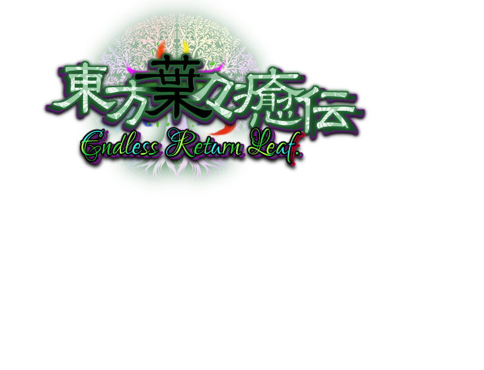

公式サイトを公開しました
『東方葉々癒伝』の紹介サイトを公開しました。 今後、ゲーム紹介、PV、ダウンロード情報、制作進捗などを追加していきます。
東方自然癒 三次創作 / 非公式ファン作品

東方自然癒の世界観をもとに制作している、現代リメイク形式の三次創作ゲームです。
Game
『東方葉々癒伝』は、東方自然癒をもとにした三次創作ゲームです。 原作の空気感を大切にしながら、現代向けに演出、テンポ、UI、ゲーム体験を整えていくことを目指しています。
画像を追加すると、時間差で自動的に切り替わるスライド表示になるかも
※assetsフォルダに ss01.png / ss02.png / ss03.png を入れる
Movie
Download
『東方葉々癒伝』の体験版・最新版を配布予定 公開後はこちらからゲームデータをダウンロードできます
ゲームデータは GitHub Releases に配置
Activity
開発日記、短い呟き、更新履歴をここにまとめてます
『東方葉々癒伝』の紹介サイトを公開しました。 今後、ゲーム紹介、PV、ダウンロード情報、制作進捗などを追加していきます。
ゲーム紹介、PV、ダウンロード、制作記録、スタッフ情報を1ページ内にまとめる構成にしました。
サイトの見た目を調整中。タイトル画像を配置しました。
RPGツクールMVでの制作に向けて、素材とプラグイン構成を整理しています。
Staff
企画・制作 / シナリオ / 音楽
『東方葉々癒伝』の企画、制作、シナリオ、音楽などを担当。 東方自然癒の雰囲気を大切にしながら、現代向けの形で再構成しています。
立ち絵 / 制作協力
立ち絵や制作面で協力。 東方葉々癒伝の雰囲気作りに関わっています。
本サイトおよび『東方葉々癒伝』は、上海アリス幻樂団様の「東方Project」および 『東方自然癒』の非公式ファン作品です。 原作・各権利者様とは一切関係ありません。
掲載している内容は開発中のものです。仕様、画像、文章、公開時期などは変更される場合があります。